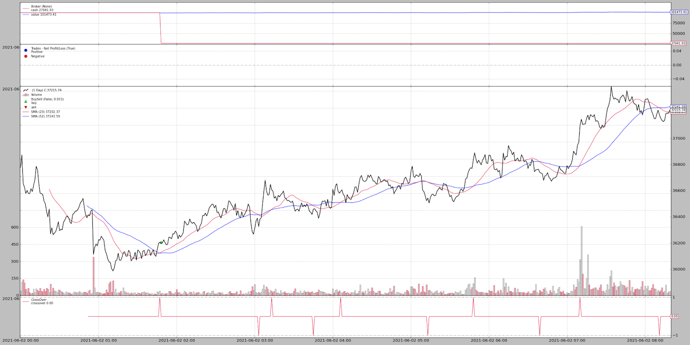

The goal was to implement the Simple Moving Average Crossover strategy on BTCUSDT futures, on a timeframe of 1 minute, using 23 minutes as the short-term moving average and 52 minutes as the long-term moving average, using the API provided by Binance.
We will implement the Simple Moving Average (SMA) crossover strategy on BTCUSDT Futures. Please refer to the script sma_crossover.py for reference. The idea behind this strategy is that when a short-term moving average crosses a long term moving average from the bottom, the underlying enter a bullish trend. Similarly, when the short-term moving average crosses a long-term moving average crosses long-term moving average from above the underlying enters a bearish trend. The Binance API was to be used for the implementation of this strategy in Python. Other libraries/ packages used in the implementation are Pandas and ta (a Python library for technical analysis). The implementation was done using the testnet account on the Binance domain which provides a demo account with virtual money to test out strategies before deploying them in the real environment.
Binance provides a REST API that allows us to connect to the Binance servers for fetching data and placing or modifying orders via Python or other languages. It also provides a WebSocket for streaming real-time data. First, we generate an HMAC SHA256 encrypted API key for the demo account on https://testnet.binance.vision. These API keys are then exported in the systems environment variables, making it possible for them to be accessed using the os library with Python. The Binance Python package provided in the problem statement gives a comprehensive collection of modular and intuitive objects which make it very easy to interact with the API. The API URL for the requesting client is set to https://testnet.binance.vision/fapi as the author was required to trade on Futures.
The first step is to fetch the real-time data of BTCUSDT at a resolution of 1 minute. We use the REST API method in the script for fetching the live data, although it is recommended to use the WebSocket for the same, especially when the market is volatile (the API docs to display a similar warning during times of high volatility). The ‘get_candlestick_data()’ function from the Request Client class from the ‘binance_f’ module is used to fetch the real-time data of the underlying, i.e. BTCUSDT. This method returns the Open, High, Low, and Close, Volume (referred to as OHLCV in the rest of the document), along with the candle opening and closing timestamp, bid and ask quantity, and the number of trades for the particular time frame as a list of lists. The calculation of the Moving Average for ‘n’ timesteps requires the asset price for the past ‘n’ timesteps. For the above problem, our long-term MA is for 52 minutes. Hence the data for the last 52 timesteps needs to be fetched at the very least, to generate the long-term MA value for the current candlestick. The ‘window’ parameter in the ‘fetch_live_ohlcv_df()’ function handles this requirement. Furthermore, a clearance of 2 more timesteps is added to the window while fetching the data, since we need the MA of the previous candle at each time step to check for the crossovers if any. The remaining part of the function parses the OHLC & timestamp data from the candlestick object into a data frame and returns it while ignoring the rest.
The next and final step was the trade management and logging part. We iterate the following steps once every 60 seconds. First, we fetch the real-time OHLC data frame using the aforementioned function. We then compute the short and long-term MAs using the 54-time steps in the data frame and append these as separate columns in the same data frame. 2 more columns are appended after this which denote the short and long-term MAs of the previous timestep at any given timestep. We then check for the condition of the crossovers. As mentioned earlier, if the short-term MA crosses the long-term MA from below, we place the buy order, whereas if the short-term MA crosses the long-term MA from above we place a sell order. We use the ‘post_order()’ method of the Request Client class from the ‘binance_f’ module. We placed a market order for the sake of this assignment, but it is recommended to use the limit order to avoid or reduce slippage. If an order is successfully executed we log its details into a CSV file. The post_order() function returns a dictionary containing the metadata of the order placed. We cancel the pending orders which don't get executed.
This entire process which consists of fetching data, computing the required metrics, placing and managing orders, and logging them adds latency in every iteration of the loop. This latency builds up over time and after a certain set of iterations, the real-time data contains one time step less than expected. We handle this case by adding a small delay of 5 seconds and fetching the data again till we get the desired data frame of 54 rows.
Scope of Improvement
SMA crossover although considered to be a very strong signal as it significantly reduces the noise of the time series, its signals often lag as compared to a few other indicators. We can use the Exponential Moving Average (EMA) to reduce this lag. EMA gives more weight to the most recent observations thereby showing trend signals earlier than the SMA.
Furthermore, we can only observe that after entering a long trade the next crossover is again a lagging indicator for the sell signal. The point where the MA shows a trend reversal can also be considered a sell signal. This can be quantified as the point where the slope (first derivative) of the MA becomes zero. The trades we have entered can be exited or squared off at this point before losing out on profit.
Results & Conclusion
The MA is an impressive trend signal and gives reliable signals in any time frame. We performed the backtesting of the same strategy, on Spot prices, however, and it showed promising results. The Python library ‘fastquant’ was used for backtesting, hence we were constrained on testing it on spot prices. Nevertheless, the results do show the significance of the trend signals given by MA crossovers. The test was performed for spot prices on the entire day of 2nd June, ‘21 at a time resolution of 1 minute. Starting with an initial capital of 100000, our portfolio value at the end of the day was 101473.41, thus yielding a PnL of +1473.41.
